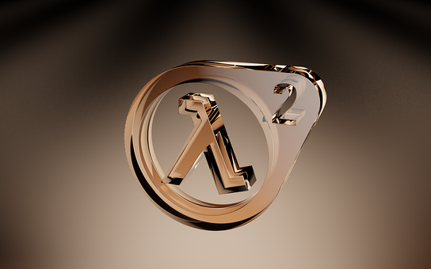
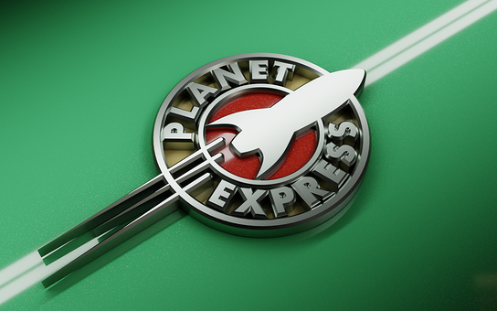
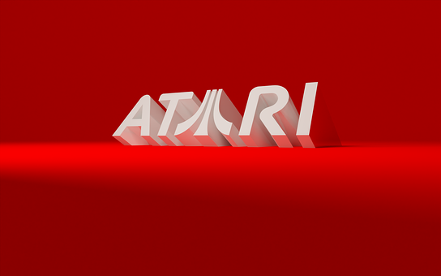
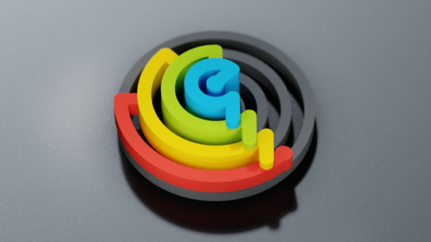
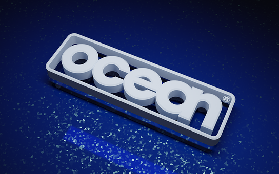
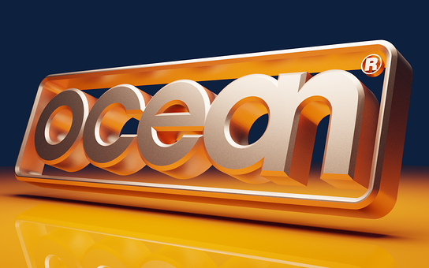
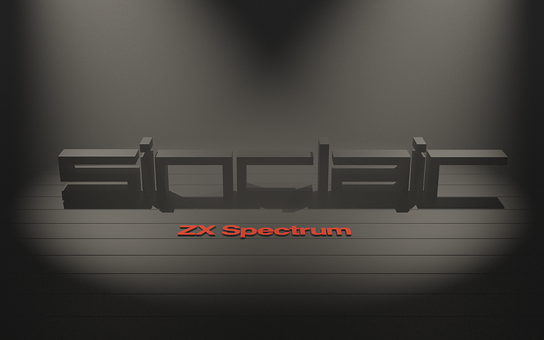
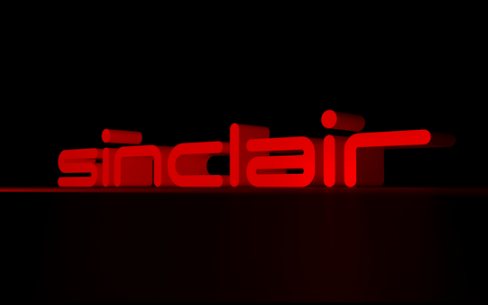

Doodles > Rendered Logos
Here are some logo themed backdrops (and animations) made in Blender.
Click for massive 1920x1200 PNG format versions rendered for sRGB colour space. They’ve all been compressed with ZopfliPNG.
 The Half-Life 2 logo, rendered as 3D.
{kind=link}
 The Planet Express logo from Futurama, rendered as 3D.
{kind=link}
 The 2002 Atari SA logo (featuring the Fuji lines instead of the middle ‘A’) rendered as 3D.
{kind=link}
 A different rendering of the logo I use for my terrible music†, rendered as 3D.
{kind=link}
 My first attempt at recreating the Ocean Software logo. There’s a definite polo mint feel to it.
{kind=link}
 My second attempt at the Ocean logo. Which looks great but is lacking the whole ‘sea’ theme.
{kind=link}
 Sinclair logo recreation - drawing on the 48K+/toastrack style, with a bit of film noir.
{kind=link}
 The more rounded Spectrum Next variant of the Sinclair logo.
{kind=link}
License, Trademarks & Credits
The images are free for personal use. For any commercial use, customisations or commissions please contact me.
The Half-Life 2 logo is a trademark of Valve Corporation.
The Planet Express logo is an abandoned trademark of Matt Groening (interesting).
The Atari logo is a trademark of Atari. Inc.
Many of the shaders used are from the Sanctus Library Addon.
Footnotes
Changelog
- 2022-11-19: Added Ocean, Sinclair and Spectrum Next renders.